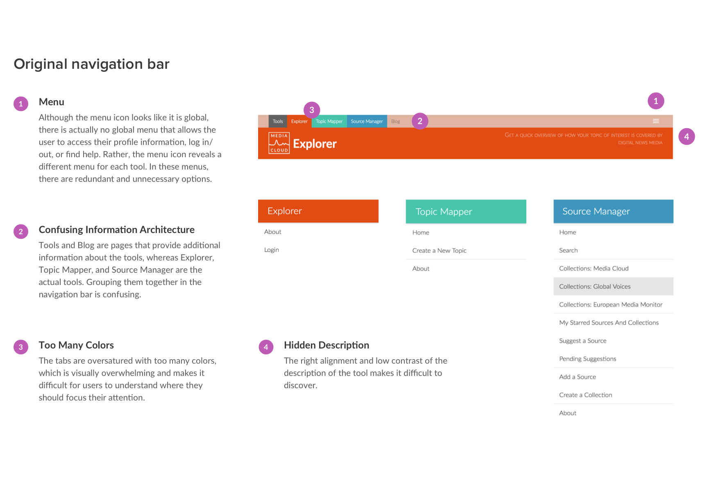
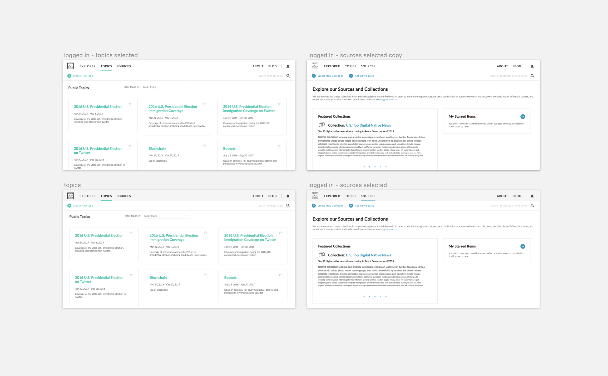
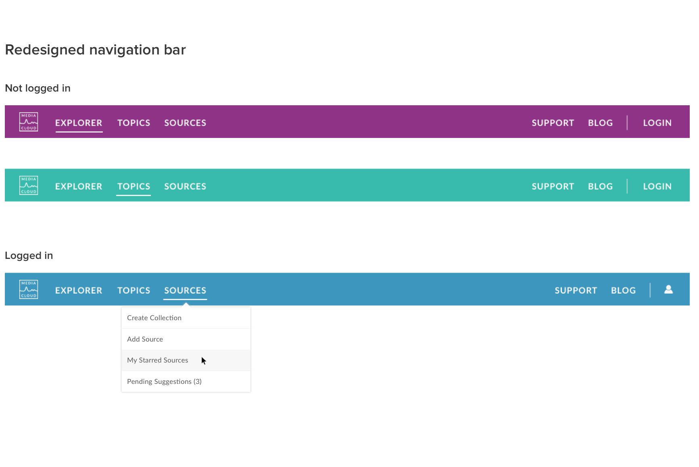
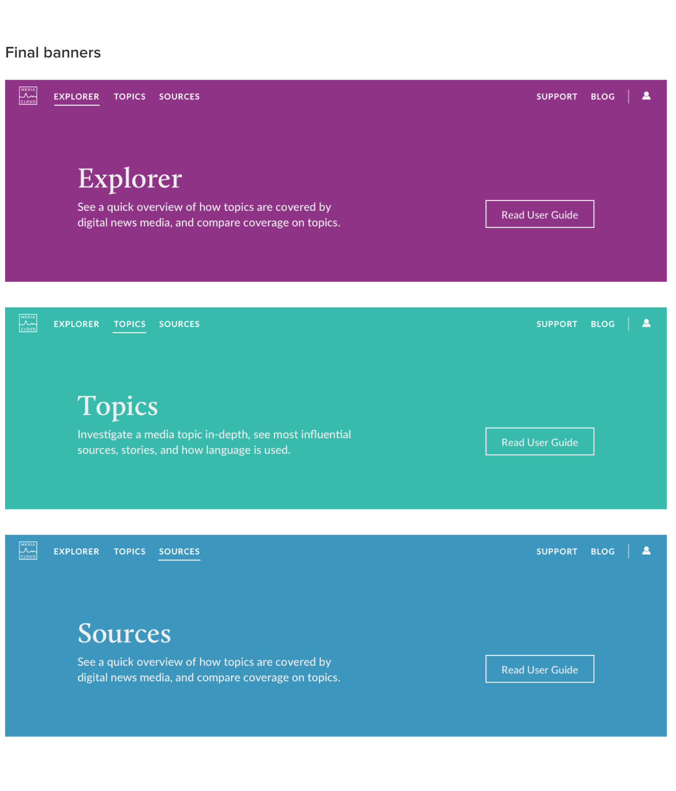
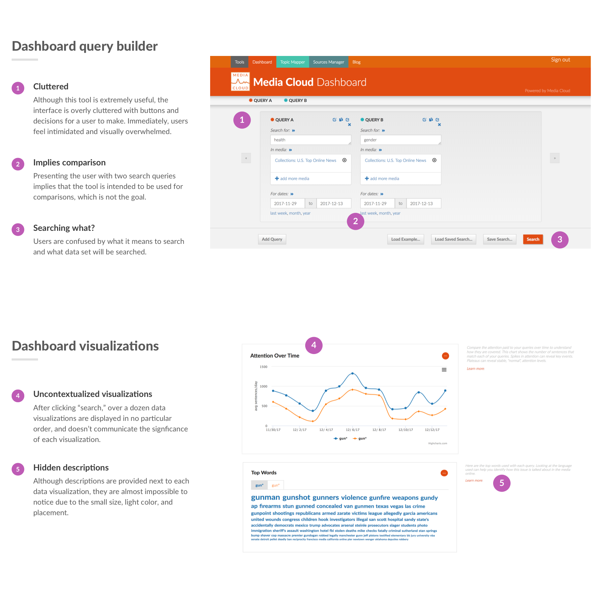
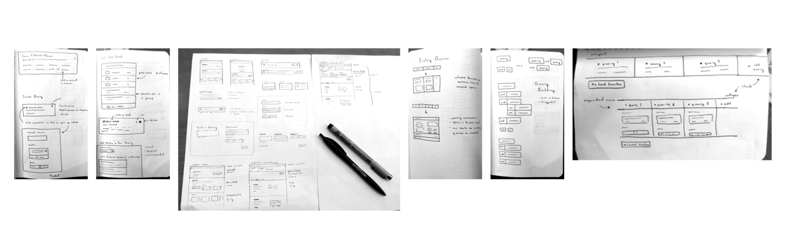

Problem
Since Media Cloud was originally built for "expert" users (academic researchers at MIT and Harvard we work closely with), its challenging for novice users to understand the platform (who don't have access to a member of our team to help onboard them). Due to recent press, people all over the world have started using the platform to do their own media research. With a growing user base, it's mission critical that we design with novice users in mind.
Research
I started by conducting a quick design review of the platform and detailing various bugs and usability issues (organized by priority) in documents which were shared with the team. From this, we fixed some of the bugs that the team considered low hanging fruit. Here are two screenshots (of many) that I annotated:
Next, I began the empathy process of understanding novice users' needs, goals, and pain points. I conducted a survey, spoke to users over video chat, and observed as users showed me how they use the product. Here are some of the questions I asked, adjusted based on the user's familiarity with Media Cloud:
Some key high level themes and learnings:
Issue: The platform was built for expert media researchers, and it shows.
Issue: The tools are not clearly differentiated and explained enough.
Issue: The data displayed on the platform lacks enough description and contextualization.
Issue: Although there are help resources available, users struggle to find them.
Issue: The interface is not visually appealing enough, which demotivates users and hinders user trust.
After sharing these research findings with the team, we brainstormed various ways we could address the issues we discovered (which I will discuss soon).
Design Goals
Before diving into specific solutions, I set a few high-level design goals for myself.
Create an updated visual aesthetic that is clean, aesthetically pleasing, trustworthy, and fully functional.
Design a simple, easy-to-interface that clearly emphasizes the most important information and possible user actions.
Conducting data-driven media research is complicated. It’s essential to highlight resources that help novice users learn how to get started.
Brand Identity
My goal in developing an updated visual identity for Media Cloud was to preserve its integrity as a serious academic research tool, but also convey
modernity and flexibility. The orange in the original color palette clashed with the blue and green shades, which hurt the palette's overall cohesiveness.
Some users even said that they associated the orange with error messages, which made looking at the banner especially unpleasant for them.
I replaced the orange with a deep purple shade, and darkened the blue and green shades in order to provide better readability with white text.
I chose a beautiful serif font called Calluna for headings, and Lato as a standard, easily readable font for body text.
Solution 1: Navigation Redesign
One of the most obvious usability issues was the platform's navigation scheme. Without a simple and clear navigation scheme, users felt lost and overwhelmed, and had trouble discovering important features like logging in and support resources.
Early on, I explored many iterations of minimalist navigation bars using white and light gray as background colors, with color accents to indicate what is selected. However, when placed over screenshots of the interface, the overall result looked barren and unfinished. In my final designs, I opted for bold background colors to make the interface feel more anchored.
 Features of the redesigned navigation bar:
Solution 2: Home Page Banners
The original navigation bar had a description of each tool at the top right, but users had trouble noticing it due to its low contrast and placement. Here are some layouts I explored in the redesign:

In the redesign, I aimed to increase the description's visibility and create a call to action to read the user guides as a better way to onboard users. Increasing the height of the banner and the font size, using center and left text alignment, and making sure there was enough contrast between the text and background went a long way. Here are the final designs that the team chose:
Solution 3: Goodbye Dashboard, Hello Explorer
For years, the first thing users would see upon arriving at Media Cloud was the Dashboard, a search query builder that allows you to quickly learn about media coverage on a topic at a high level. Its interface was visually overwhelming and lacked contextualization. Here's what I learned via observation and user interviews:
I began the redesign by sketching out layouts aimed to address as many user problems as possible. My focus was on simplifying the interface, creating a better query builder, and helping users understand search results.

Something I learned from watching expert users use Dashboard was they they frequently built long query strings (sometimes upwards of 200 characters per query). Since Media Cloud
uses Solr as its text indexing and search engine, it's able to parse boolean syntax, eliminate unwanted words from results, and much more. This is an incredibly powerful feature
that was hidden inside a small, unassuming text input field. As a result, many novice users thought that they could only use Dashboard to search for words and short phrases.
There's a bit of a learning curve in learning the Solr syntax, especially for users who don't have experience thinking about programming concepts such as booleans.
In an attempt to help novice users learn how to build custom search queries, I explored query builder interfaces that involved drag-and-drop interactions, using familiar words like "and," "or," and "not."
Here, I had to make some tradeoffs between conveying functionality and visual simplicity. These are a few of the iterations:
The team thought that the boolean query builder interfaces were promising, but ultimately we couldn't move forward with them because the engineering team did not have enough bandwidth to
build such a frontend-heavy interface (with many edge cases to consider) at the time. Ultimately, we decided to build a simpler interface without boolean elements and created a support
page that teaches users the basics of Solr syntax. We named it Explorer.
Here are the final designs of the home page and search page:
The home page is purely meant to give users more context about Explorer before diving into query building, where things get more complicated (albeit interesting). The carousel is
filled with sample searches curated by our team, in order to give users an idea of what they could search for. This is especially useful to users who are simply curious about the
platform and don't have particular research topics in mind yet.
Clicking "Search" takes them to the Explorer search page. Users who have a Media Cloud account and are logged in are launched into the search page directly.
Results
After several rounds of tweaks and solving edge cases, these designs are currently being developed and will be live on Media Cloud! :) Hoping I'll be able to share success metrics soon.
Reflection
It was a privilege to get the opportunity to work on a tool that helps researchers understand and analyze media coverage, especially amidst the chaos of our political climate. From this experience, I learned that clarity > simplicity, and that while it's easy to tack on a lot of features, but it's very hard to make it all look elegant. Working with Rahul, Natalie, Anushka, and Cindy at Civic Media was wonderful - thank you for all the awesome collaboration, constructive feedback, and for always challenging to think more deeply and broadly.